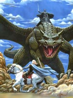

Мельдун, Мел Дун, в ірландській міфології один з найбільш знаменитих мандрівників. Батько Мельдуна був правителем Аранських островів; зі своїми воїнами він висадився на узбережжі Ірландії, розграбував церква і згвалтував черницю.
Незабаром зухвалий загарбник загинув від рук заморських розбійників, судячи з усього, вікінгів, а черниця народила Мельдуна, якого всиновила дружина місцевого сеньйора, що доводилася їй сестрою. Хлопчик довгий час не підозрював про своє походження. Дізнавшись історію справжньої матері, Мельдун з трьома двоюрідними братами відправився на батьківщину давно загиблого батька.
Повний рішучості помститися за його смерть, Мельдун звернувся до друїдам, які вказали йому сприятливі дні для побудови човна з трьох шарів бичачих шкур, а також для спуску її на воду і відплиття. Разом з братами і ще сімнадцятьма воїнами юнак відправився в небезпечну подорож. Перший острів, до якого пристав Мельдун, був населений вбивцями, але не тими, хто вбив його батька; на другому мешкали велетенські мурашки, які мало не зжерли команду разом з човном. На відміну від них, величезні птахи, які населяли наступний острів, були простими. Вони навіть забезпечили мандрівників м'ясом.
Ще два острови належали жахливим кровожерливим коням, і можна зрозуміти радість Мельдуна, коли мандрівники пристали до острова Будинки лосося. Там на них чекала порожня хатина з їжею, питвом і зручними ліжками, а свіжа лососина потрапляла на кухню за допомогою пристрою, що викидав рибину з моря прямо в будинок. Наступний острів був покритий садами з чудовими на смак яблуками.
Однак далі їх чекала небезпека на островах Вёрткіх тварі, Войовничих Коней, Таємничого Кота і лютий кабан, а земля одного з островів була гарячою, як вулкан. Серед дивних створінь і тварин, зустрінутих під час шляху, були: свиня і телята, такі величезні, що не вміщалися в котел; вівці, по своєму бажанню змінювали колір шерсті; похмурий мірошник, який молов все, що можна було розмолоти; плем'я жалобників; острів, розділений на чотири королівства огорожами з золота, срібла, міді і кришталю; замок зі скляним мостом, в якому жила красуня, що відкинули залицяння Мельдуна; засмучені птиці; самотній паломник на крихітному острівці, який щорічно волею провидіння Господнього збільшувався; дивовижний фонтан зі струменями з молока, пива і вина; велетні-ковалі; море зі скла; море з хмар, в якому раптово виникали замки, ліси, тварини і страшні чудовиська; підводний острів Пророцтв; колосальна срібна колона і така ж мережа; недосяжний острів на п'єдесталі; пропозиція вічної молодості на острові Королівських Дочок; нарешті, відлюдник, що харчувався лососем, якого приносила йому ручна видра, і хлібом, що йому доставляли ангели.
Мельдун в кінці кінців наздогнав вбивць батька, але, коли вони кликали про пощаду, відпустив їх з миром. Так закінчилася подорож, про який говорять, що в ньому зібрана "вся мудрість Ірландії".